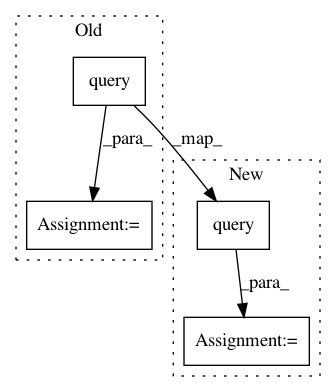

ed04f04e014da8ea597ff00b3f3f15c7e6d6fefe,src/pudl/transform/eia861.py,,sales,#Any#,653
Before Change
logger.info("Tidying the EIA 861 Sales table.")
// Clean up values just enough to use primary key columns as a multi-index:
logger.debug("Cleaning up EIA861 Sales index columns so we can tidy data.")
clean_sales = (
tfr_dfs["sales_eia861"].copy()
.assign(balancing_authority_code_eia=lambda x: x.balancing_authority_code_eia.fillna("UNK"))
.dropna(subset=["utility_id_eia"])
.query("utility_id_eia not in (88888, 99999)")
.astype({"utility_id_eia": pd.Int64Dtype()})
.set_index(idx_cols)
)
// Split the table into index, data, and "denormalized" columns for processing:
// Separate customer classes and reported data into a hierarchical index
logger.debug("Stacking EIA861 Sales data columns by customer class.")
data_cols = _filter_customer_cols(clean_sales, CUSTOMER_CLASSES)
After Change
]
// Pre-tidy clean specific to sales table
raw_sales = (
tfr_dfs["sales_eia861"].copy()
.query("utility_id_eia not in (88888, 99999)")
)
//////////////////////////////////////////////////////////////////////////////////////////////////////////////////////////////////////////////////////
// Tidy Data:
//////////////////////////////////////////////////////////////////////////////////////////////////////////////////////////////////////////////////////
In pattern: SUPERPATTERN
Frequency: 3
Non-data size: 4
Instances
Project Name: catalyst-cooperative/pudl
Commit Name: ed04f04e014da8ea597ff00b3f3f15c7e6d6fefe
Time: 2020-06-24
Author: aesharpe@Austens-MacBook-Pro.local
File Name: src/pudl/transform/eia861.py
Class Name:
Method Name: sales
Project Name: andresriancho/w3af
Commit Name: 2add7b48cc1d9172133f26f801f3d65ff84b8345
Time: 2017-11-28
Author: andres.riancho@gmail.com
File Name: w3af/plugins/grep/wsdl_greper.py
Class Name: wsdl_greper
Method Name: analyze_wsdl
Project Name: mlflow/mlflow
Commit Name: de6603824e1ac7d9cdf925acb0f9fff073991332
Time: 2019-11-05
Author: jcuquemelle@gmail.com
File Name: mlflow/store/tracking/sqlalchemy_store.py
Class Name: SqlAlchemyStore
Method Name: _search_runs